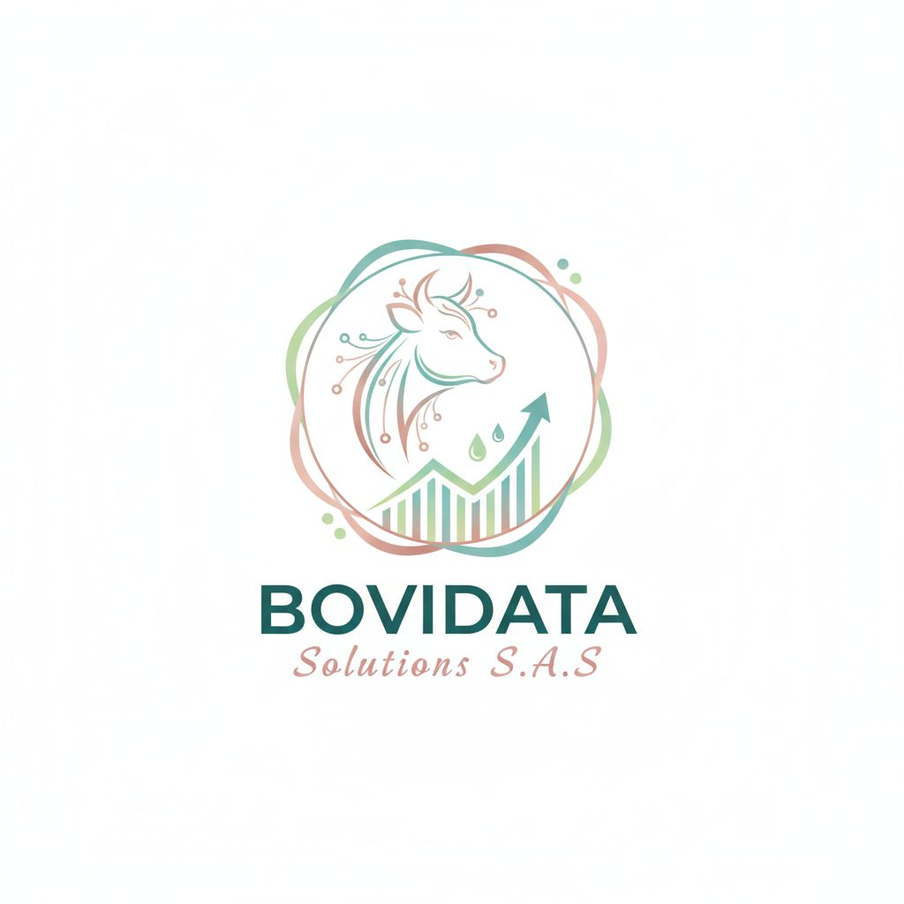

Análisis Integral de Subsistemas Ganaderos
Nutrición, Alimentación, Población, Reproducción, Producción, Salud y Economía.

Consultoría veterinaria especializada en sistemas bovinos de doble propósito

Impulsando la Excelencia Ganadera, Bovidata Solutions es una firma de consultoría veterinaria profesional especializada en optimizar sistemas bovinos de doble propósito (leche y carne). Nuestro enfoque integral abarca todos los aspectos clave de la producción.
Nutrición, Alimentación, Población, Reproducción, Producción, Salud y Economía.
Brindar asesoria profesional e integral en sistemas de produccion bovina de doble propósito mediante la recopilacion y análisis de informacion. Nos comprometemos a optimizar la toma de decisiones y potenciar la rentabilidad ganadera de nuestros clientes.
Visionado para el segundo semestre del 2028, proyectamos ser una empresa referente en consultoría veterinaria, reconocida por su gestión de datos, análisis técnico y mejora continua en sistemas bovinos de doble propósito.

Directora del subsistema de nutrición y alimentación
Directora del subsistema de reproducción
Directora de los subsistemas de salud y población
Directora del subsistema de producción
Subsistemas: Nutrición + Reproducción
Desde $1.200.000 COP/mes
Valor ajustado según las necesidades y características de la finca y del hato.
Si deseas más información sobre este plan y sus beneficios, contáctanosSubsistemas: Salud + Producción
Desde $1.500.000 COP/mes
Valor ajustado según las necesidades y características de la finca y del hato.
Si deseas más información sobre este plan y sus beneficios, contáctanosSubsistemas: Producción + Nutrición + Reproducción
Desde $2.500.000 COP/mes
Valor ajustado según las necesidades y características de la finca y del hato.
Si deseas más información sobre este plan y sus beneficios, contáctanosSubsistemas: Nutrición, alimentación, población, reproducción, producción, salud y economía.
Desde $4.000.000 COP/mes
Planes semestrales y anuales personalizados.
Valor ajustado según las necesidades y características de la finca y del hato.
Si deseas más información sobre este plan y sus beneficios, contáctanos


Durante el desarrollo del proyecto se realizaron visitas técnicas a fincas ganaderas, evaluación del estado sanitario de los animales, identificación de necesidades productivas y diseño de propuestas de mejoramiento para los productores. También se efectuaron actividades de observación, análisis de manejo animal y aplicación de conocimientos adquiridos en medicina veterinaria y producción pecuaria.
Contacto: Oficinas BOVIDATA
Teléfono: +57 3008091409
Correo: Solicitudes@Bovidata.com